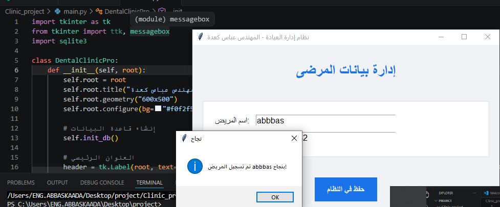

نظام إدارة عيادة الأسنان الذكي

عن المشروع
هذا المشروع عبارة عن نظام مكتبي احترافي تم بناؤه لتسهيل العمليات الإدارية في العيادات. يعتمد النظام على منطق برمجي قوي يربط واجهة المستخدم بقاعدة بيانات محلية لتخزين سجلات المرضى بدقة وأمان.
- لغة البرمجة: Python.
- قاعدة البيانات: SQLite.
- الواجهة: Tkinter GUI.